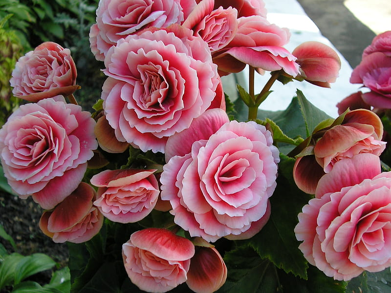
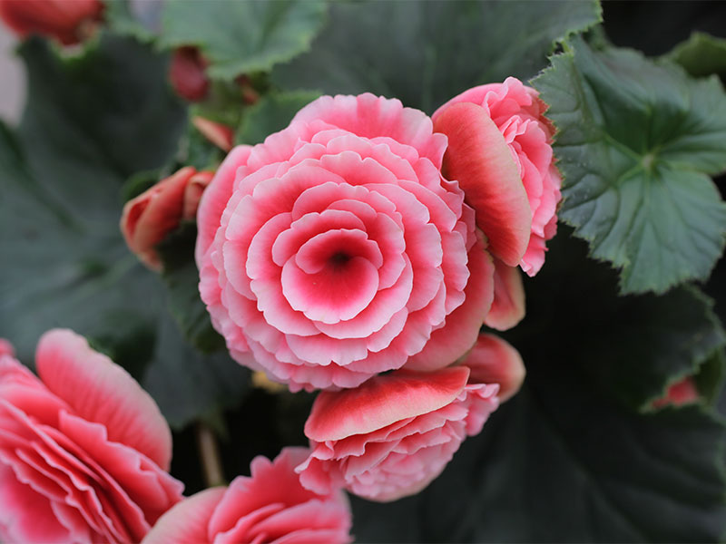
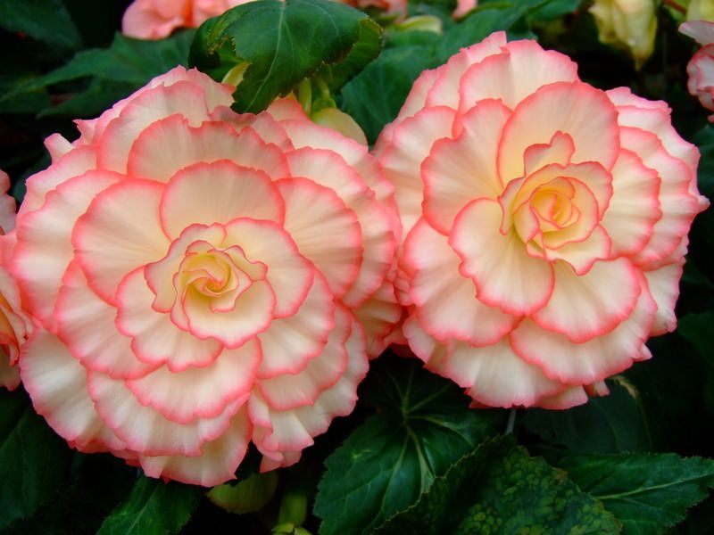
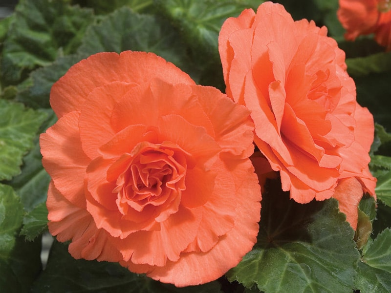

Meaning: To repay a favor, A warning
Origin
To repay a favor, Charles Plumier, a seventeenth-century French botanist, named the begonia flower after Michel Bégon, a French politician and plant collector. The flower’s name, which contains the phrase “be gone,” may explain its use as a symbol of warning.
Gallery



